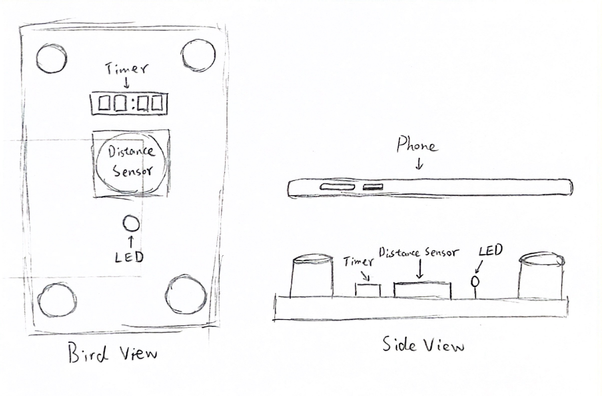

In the course of this week, we are still exploring physical computing in depth, adding more control units and creative coding.
We tried to make a capacitive touch circuit.
The main principle is that the human body is naturally grounded to form a circuit.
But this is strongly related to the environment, for example, we have encountered a poor contact situation, we need to touch the ground wire by hand to make the circuit work stably.
We also experimented with a couple of interesting applications for motion capture sensors.
Controlling the hand in the screen by capturing the movement of the hand in reality reminded me of motion capture in some game productions.

Finally I thought about the theme of my final project, I want to make a reasonable combination of arduino and p5 to produce good outcomes.